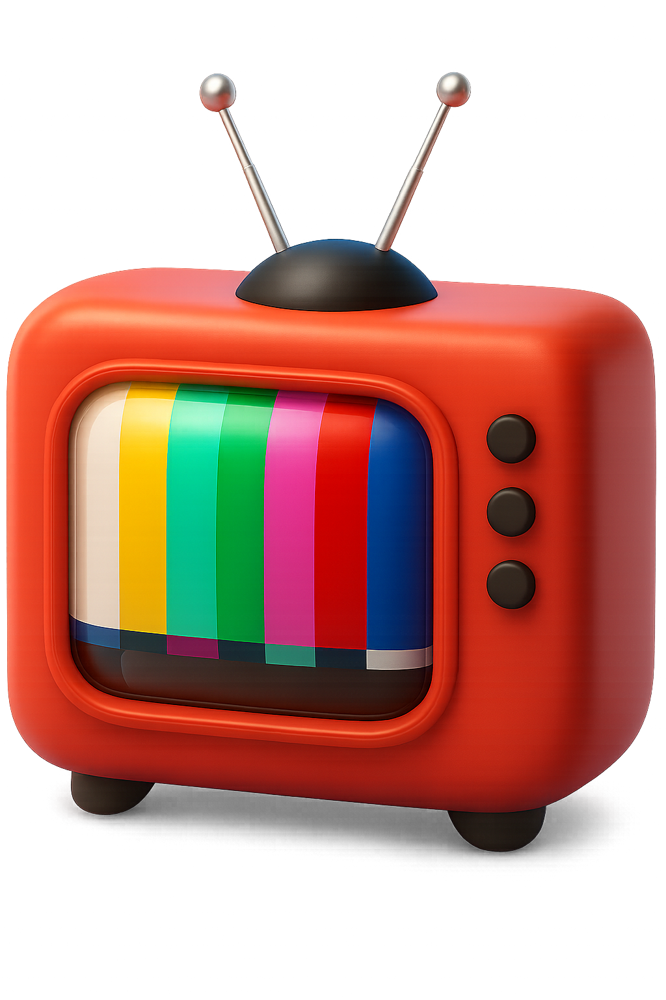

404
Questa vibe non esiste.
Segnale perso. Sei finito su un canale morto.
Sintonizzati di nuovo dove c'è l'azione.
Segnale perso. Sei finito su un canale morto.
Sintonizzati di nuovo dove c'è l'azione.